North America
Geography
North America, the third-largest continent, spans from the Aleutian Islands in the northwest to the Isthmus of Panama in the south. It includes Greenland in the northeast and the islands of the Caribbean Sea and western North Atlantic. Its diverse physical geography comprises five major regions: the mountainous west, the Great Plains, the Canadian Shield, the varied eastern region, and the Caribbean. These regions contain nearly all the world’s biomes, from deserts and grasslands to tundras and coral reefs.
Western Region
The western region features young mountain ranges, such as the Rockies, which stretch from British Columbia to New Mexico, and the Sierra Madre system extending from the southwestern U.S. into Central America. This area is part of the larger Cordilleras, a network of mountain ranges running from Canada to Panama. Volcanic activity in this region has created fertile soils but also poses hazards like eruptions and earthquakes.
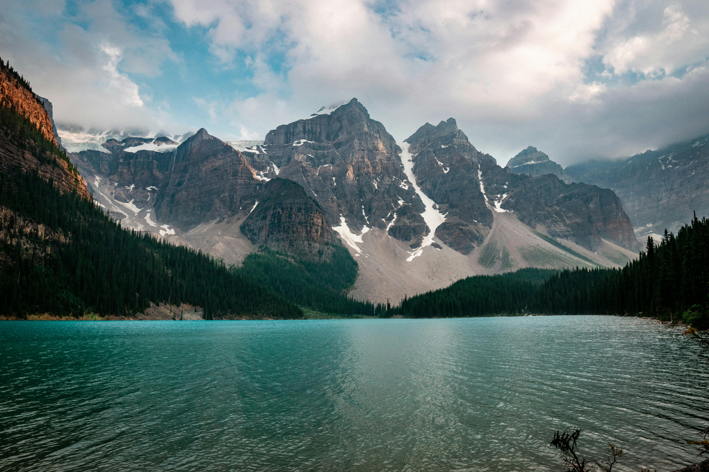The Cascade Range, a temperate rainforest in the Pacific Northwest, receives 100–200 inches of rainfall annually, supporting unique flora like Douglas fir and fauna like Roosevelt elk.
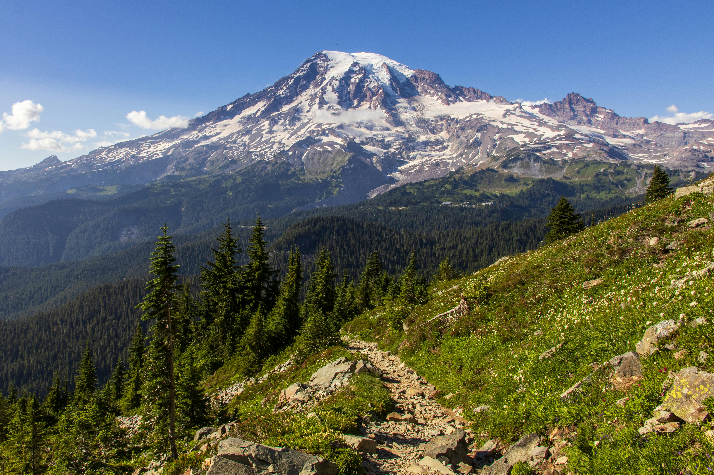Deserts such as the Sonoran, Mojave, and Chihuahuan, located in the U.S. and northern Mexico, thrive in the rain shadows of nearby mountain ranges. These deserts feature iconic plants like the saguaro cactus and wildlife such as Gila monsters and rattlesnakes. The western region is also rich in offshore oil and natural gas deposits.
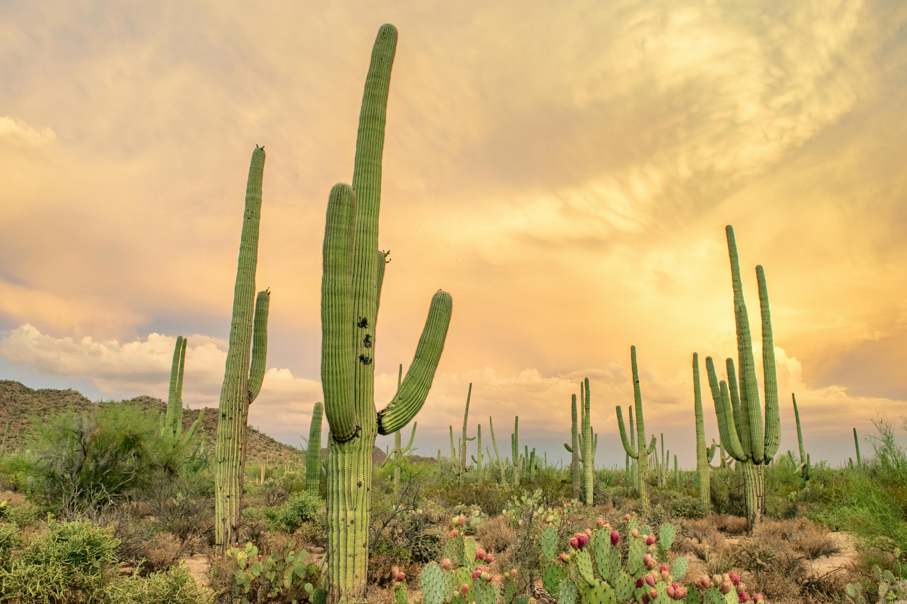Great Plains
The Great Plains lie at the center of the continent, characterized by deep, fertile soil deposited during the last ice age. This "Breadbasket of North America" supports vast grain production and oil and gas deposits. The plains are dominated by grassland biomes, ranging from tallgrass to shortgrass prairies, and host species like bison and prairie dogs. The region's climate, marked by extreme weather, is ideal for native grasses but limits the growth of larger vegetation.
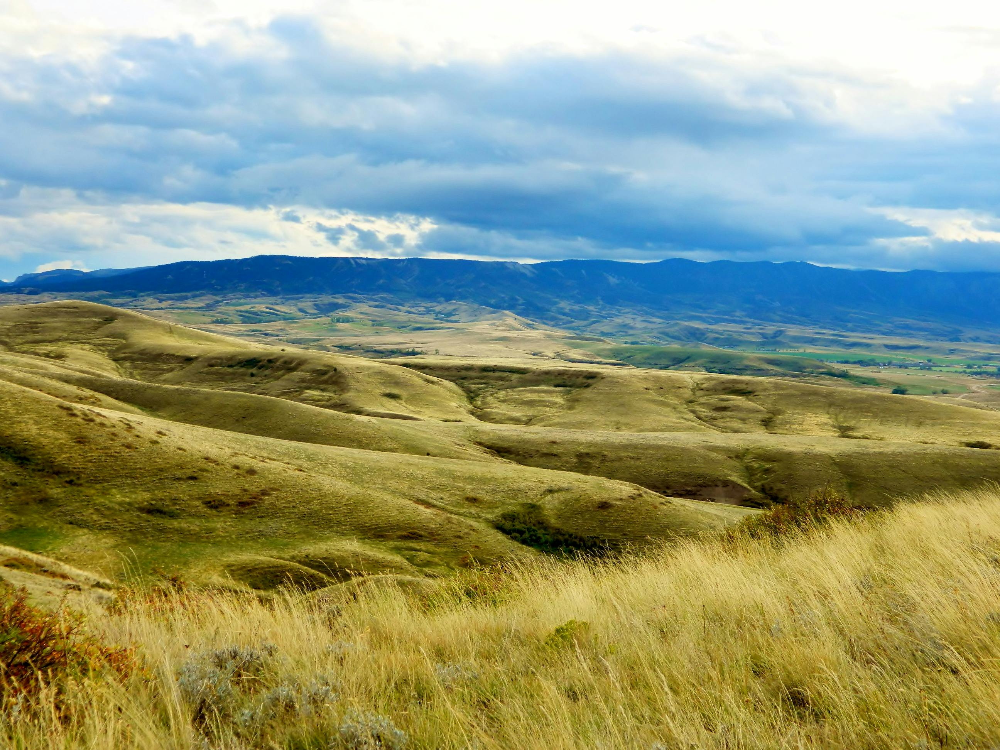Canadian Sheild
The Canadian Shield, a vast plateau of ancient rock, stretches across eastern, central, and northwestern Canada. Its tundra biome is marked by permafrost, which keeps moisture near the surface, enabling vegetation like lichens and mosses to thrive in the Arctic climate. This supports wildlife such as caribou and musk oxen. During summer, the thaw creates shallow lakes and bogs that add to the region’s unique biodiversity.
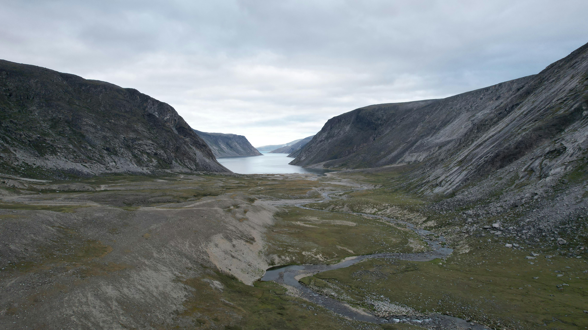Eastern Region
The eastern region includes the Appalachian Mountains and the Atlantic coastal plain. The Appalachians, among North America’s oldest mountains, have been mined for coal and minerals for centuries.
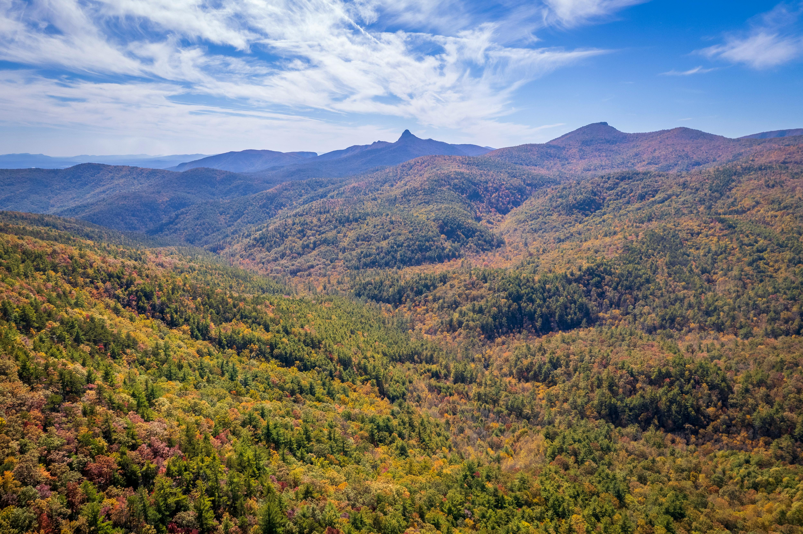The coastal plain features wetlands like the Everglades, a biologically diverse system of sawgrass marshes, cypress trees, and mangroves. The Everglades provide habitats for alligators and wading birds, making it an essential ecosystem for wildlife conservation.
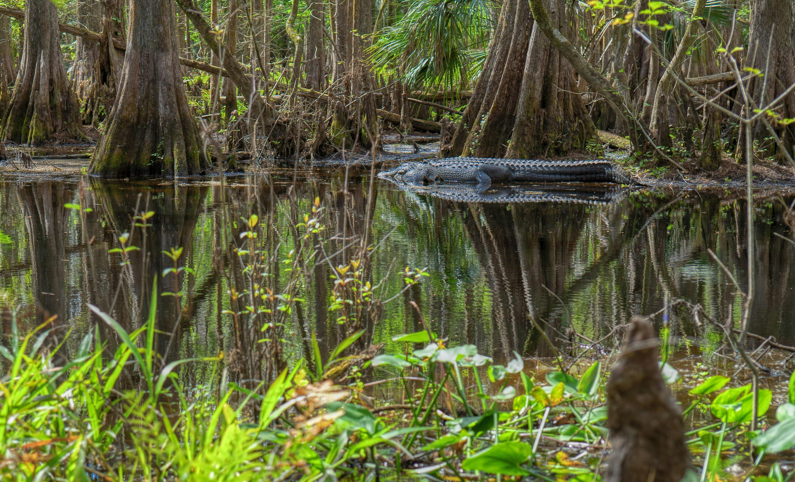Caribbean Region
The Caribbean consists of more than 7,000 islands, islets, reefs, and cays, ranging from flat, sandy islands to rugged volcanic terrain. Coral reefs in the Caribbean Sea are vibrant biomes, supporting seagrass, tropical fish, sharks, and sea turtles. The Florida Keys, a chain of cays near southern Florida, are part of this ecosystem. These reefs play a vital role in maintaining marine biodiversity.
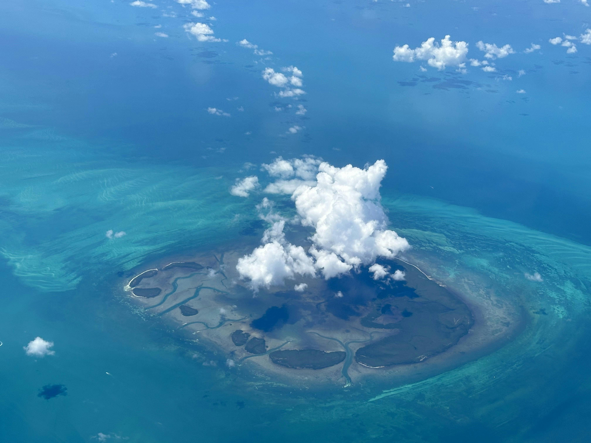Natural Wonders
North America is home to remarkable natural features, including Denali, the continent's highest peak.

The Great Lakes, the largest freshwater system on Earth.
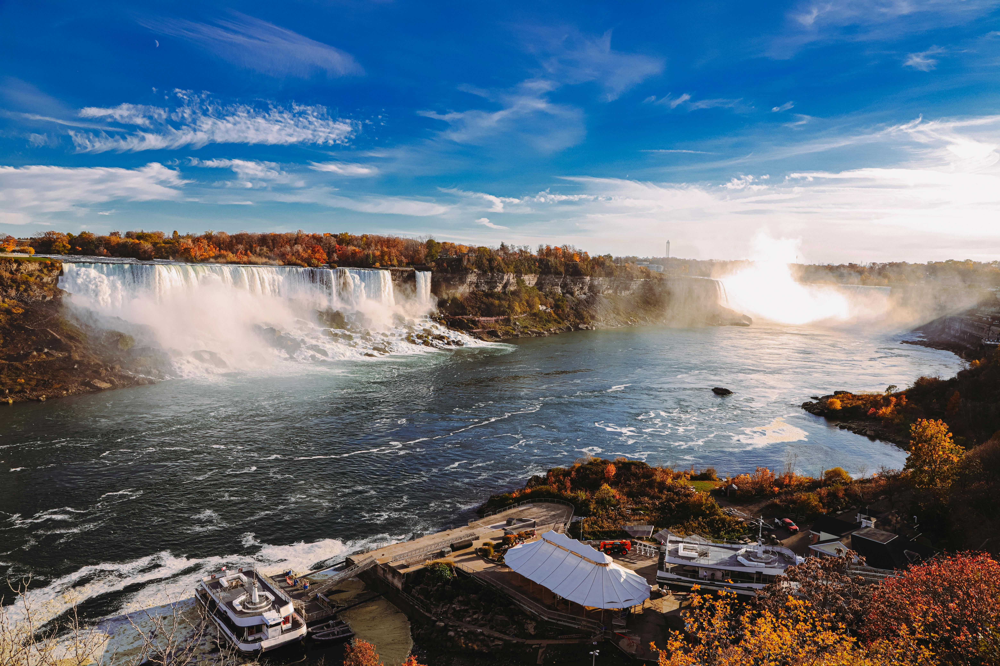Other highlights include Yellowstone National Park’s geysers.
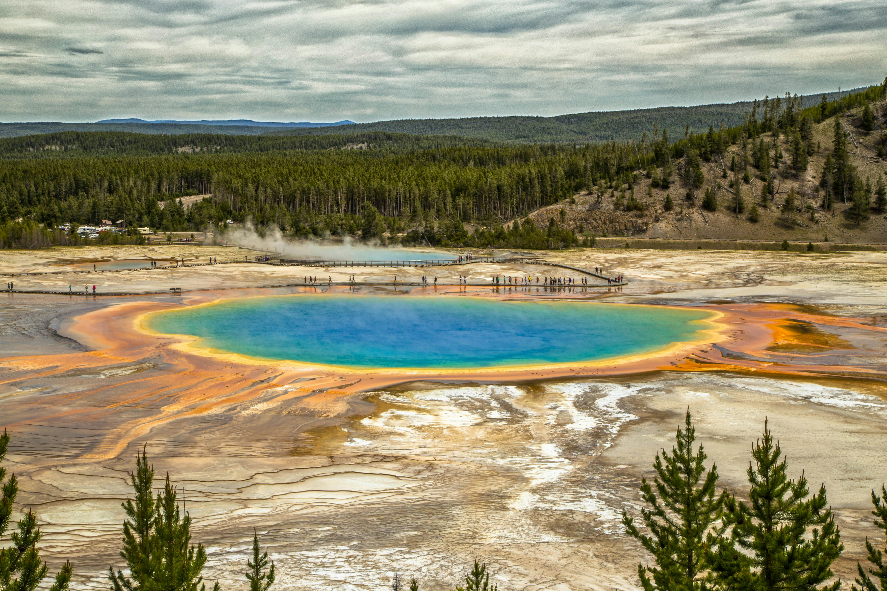Canada’s Bay of Fundy with the world’s highest tides.
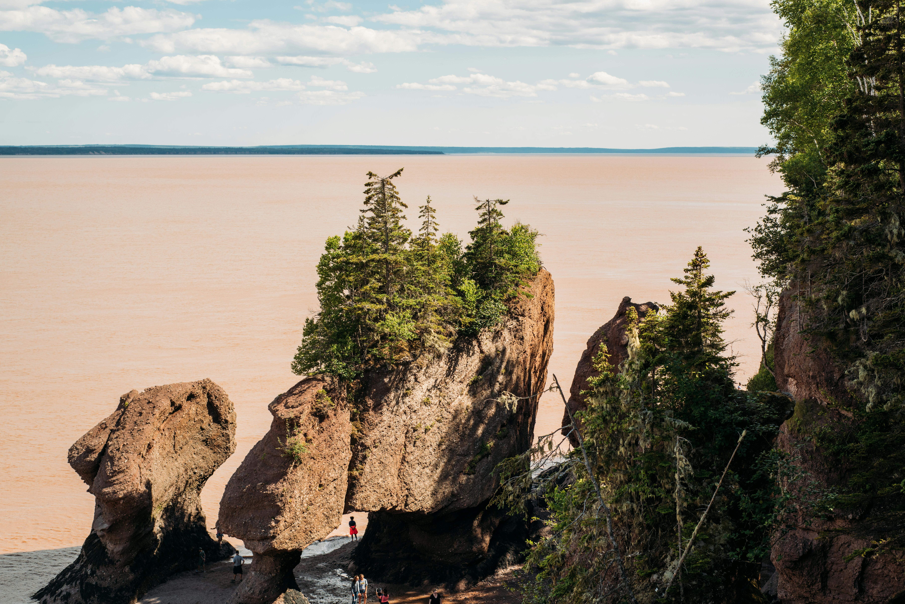And the Mississippi River, which drains parts of 31 U.S. states.
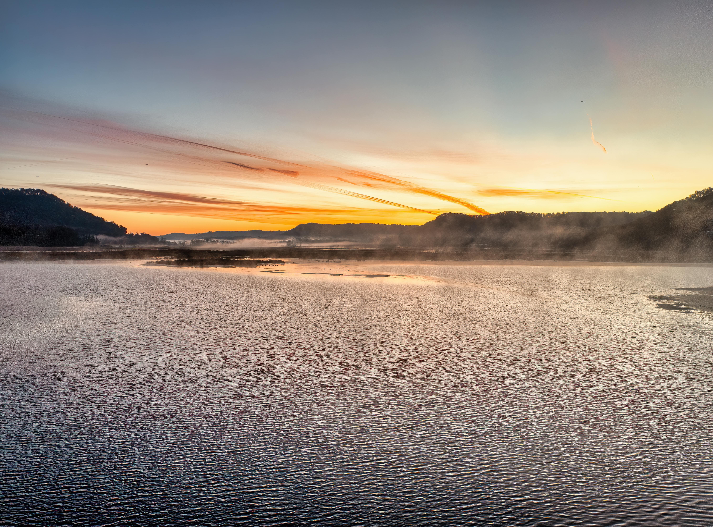These landmarks showcase the continent's diverse and dynamic landscapes.
Biodiversity
North America is a continent of striking ecological diversity, shaped by its vast range of climates and landscapes. From the frozen tundras of Canada and Alaska to the arid deserts of the Southwest, the continent supports a wide array of plant and animal life.
Iconic species such as bison, bald eagles, and grizzly bears symbolize the wilderness of North America. The continent is also home to unique plant ecosystems, including the towering redwood forests of California and the resilient cacti of the Sonoran Desert, which are adapted to survive in harsh, dry conditions.
Click the image below to reveal a fun fact:

Ecosystems
North America's major ecosystems are as varied as its geography. In the north, boreal forests stretch across Canada and Alaska, creating one of the largest continuous forested regions on Earth. These forests are critical habitats for species like moose, lynx, and wolves.
In the southeastern United States, wetlands like the Everglades provide a home to alligators, manatees, and countless bird species while playing a vital role in water purification and flood control. Meanwhile, the deserts of the Southwest, such as the Sonoran Desert, are hotspots of biodiversity, supporting specialized flora like saguaros and fauna like roadrunners and rattlesnakes.
Conservation
Conservation efforts in North America have been significantly advanced by the national parks system, which has set aside vast areas to protect the continent's natural heritage. Iconic parks like Yellowstone and Yosemite not only preserve biodiversity but also offer opportunities for education and recreation. However, challenges persist, including the increasing frequency of wildfires, which threaten forests and wildlife, and deforestation due to urban expansion and agriculture. Addressing these issues is vital to maintaining the ecological balance and natural beauty of North America.